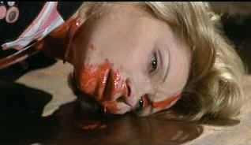

| Deep Red(Profondo
Rosso)/B,B+ |
| Anchor
Bay/1975/126/ANA 2.35 |
Deep Red flows with Dario Argento cinema conventions. The
camera is peripatetic, moving in smooth ominous sweeps through narrow hallways, searching out the
dark recesses where fear lives. The camera moves in on characters in danger, then pulses back again
to heighten the tension. Argento's fondness for architecture is once again used with striking
effect in Deep Red.
The similarities between Bird with the Crystal
Plumage and Deep Red are inevitable. In both films an artist, a writer in Bird
and jazz pianist in Deep Red, are sucked into a bloody mystery. Bird has a much
crisper and better developed story line. Each has exquisite moments of panic and horror and the
ways in which victims are dispatched. Argento even raises the ante several notches in Deep Red.
Argento displays a good sense of humor around the dark doings of Deep Red.
The romantic possibilities are played out with charm. Some of the sequences drag a bit as Argento
tries to squeeze the last drop of blood from every situation. Still, this is an engaging film.
The lack of a strong protagonist takes Deep Red down a peg. David
Hemmings fails to give jazzman Marcus Daly any fire or spirit. I was half hoping to see
Hemmings lying in another pool of blood. He just doesn't fit my bill as hero material. But maybe
that's a virtue after all. Argento's characters are more victims than heroes.
 |
| Argento's characters are prepared to give blood.
©Anchor Bay |
There's a nice interview with Argento and and collaborator as an extra. It's
not very extensive, but there are tidbits to be gleaned. The piazza setting where Marcus first
becomes a captive of circumstance features a bar modeled after an Edward Hopper painting, inspired
by an Argento trip to the States.
Anchor Bay has done handsomely by Argento fans. This is the "Full Length
Director's Cut" restoring about twenty minutes of footage that was absent from other American
releases. The anamorphic transfer is smooth and detailed with little added noise. This is a
film-like transfer, though owing to the film stock and camera work, the picture lacks the depth and
wealth of detail that might otherwise be there. In some ways it adds to the suspense. Of course,
the color is displayed with garish delight. At least the blood is. The color design is fairly
muted. It appears an accurate representation of the filmmaker's intent. Some of the night scenes
might have had deeper blacks You might want to think twice about watching with the English
soundtrack. Dialogue bounces back and forth between English and Italian with English subtitles for
the restored sequences. The dubbing isn't very good anyway. Anchor Bay warns you of this anomaly
prominently on the back cover of the package.
|
|
|
|

Selections from the Feature Archive
include articles on Akira Kurosawa, Frank
Darabont, Blonde Bimbos, Hollywood Street Gangs, or Vietnam: The
Hollywood Pariah, and many more....
Roman
Holiday
Join the editor and his family on a trip through Roman movie sites in this unusual feature.
 
Now a major independent DVD distributor, Image has parlayed its laser disc business
to success. Great DVD release calendar info.
 Gary Morris's insightful publication Bright Lights
Film Journal turns the celluloid in films from a unique perspective. Click on the image above
for more pure movie views. Gary Morris's insightful publication Bright Lights
Film Journal turns the celluloid in films from a unique perspective. Click on the image above
for more pure movie views.

One of the prime resources for DVD information: rumors,
reviews and news.

DVD
Demystified makes it all clear.The official Internet DVD FAQ for the rec.video.dvd
Usenet newsgroups.

The
Movie Poster Archive includes extensive poster images from the films of stars like Susan Hayward,
Kirk Douglas, Katharine Hepburn and many more. Our featured star is James Mason
|